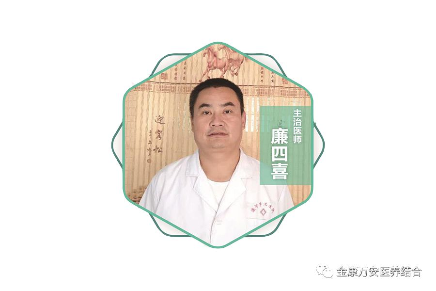

漯河万安康复医院疼痛科主任廉四喜简介
人气: "" 时间：2018-07-25
疼痛科主人介绍
漯河万安康复医院疼痛科主任廉四喜，中华软组织疼痛学会会员 （原部队军医），进修于解放军总医院（北京301医院），师从于北京301总医院康复医学科主任王福根教授，引用北京中医药大学基础医学院针灸、推拿治疗技术，曾在空军医院进修脊柱疼痛手法复位治疗技术。

从事软组织疼痛治疗20余年，良好的医德医风，养成了他急病人之所急，想病人之所想，能简单不复杂，能保守不手术，病人利益至上的工作作风。他运用中西医结合微创银质针松解术、小针刀、穴位埋线、臭氧术、骶管注射、中药熏蒸、电针、热敷等方法治疗顽固性难治性颈椎病、腰间盘突出症、膝关节病、坐骨神经病、跟骨骨刺、急性软组织损伤、肩周炎、强直性脊柱炎、类风湿性关节炎等各种疼痛性疾病，疗效显著。